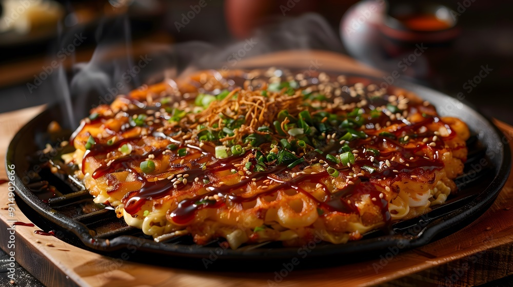

Home
Okonomiyaki Recipe

Description
Okonomiyaki is a beloved Japanese dish that resembles a savory pancake, with its name literally
meaning "grilled as you like it." The foundation consists of a batter made from flour, eggs, and
dashi stock, generously mixed with shredded cabbage and various ingredients such as thinly sliced
pork belly, seafood, or vegetables according to personal preference or regional style. Once cooked
on a hot griddle until golden and crispy on the outside while remaining tender inside, it's topped
with a sweet-savory okonomiyaki sauce, Japanese mayonnaise, dried seaweed flakes (aonori), and bonito
flakes (katsuobushi) that gently "dance" from the rising heat.
Two distinct regional styles dominate the okonomiyaki landscape: the Kansai/Osaka style, where all
ingredients are mixed together before cooking, and the Hiroshima style, characterized by its layered approach
with a thin base layer of batter, a mountain of cabbage, protein, and often yakisoba noodles. In Japan,
okonomiyaki is frequently enjoyed at specialized restaurants featuring built-in table grills where diners cook
their own pancakes, transforming a simple meal into an interactive social experience that embodies the customizable
spirit of this comfort food classic.
Ingredients
For the batter
- 1 cup all-purpose flour
- 2/3 cup dashi stock (or water if unavailable)
- 2 eggs
- 1/4 teaspoon salt
- 2 tablespoons grated nagaimo (mountain yam), optional but traditional
Main ingredients
- 4-5 cups finely shredded cabbage (about half a medium cabbage)
- 2 green onions, thinly sliced
- 1/4 cup tenkasu (tempura scraps), optional
- 2 tablespoons pickled red ginger (beni shoga), chopped
- Your choice of protein: thinly sliced pork belly, shrimp, squid, octopus, or chopped bacon
For toppings
- Okonomiyaki sauce (can substitute with 3 parts ketchup,
1 part Worcestershire sauce, 1 part soy sauce, and 1 part honey)
- Japanese mayonnaise (Kewpie brand if available)
- Aonori (dried seaweed flakes)
- Katsuobushi (dried bonito flakes)
- Additional sliced green onions for garnish
For cooking
- Vegetable oil for the pan or griddle
For Hiroshima-style, you would also need yakisoba noodles
(pre-cooked) and possibly an extra egg to place on top.
Steps
- In a large bowl, whisk together flour,
dashi stock, eggs, salt, and grated nagaimo (if using) until smooth.
Let the batter rest for about 15 minutes.
- Add the shredded cabbage, sliced green onions,
tempura scraps, and pickled ginger to the batter. Gently fold everything together
until the cabbage is evenly coated with batter. The mixture should be mostly cabbage
with just enough batter to bind it.
- Heat a large non-stick pan or griddle over medium heat.
Add a tablespoon of vegetable oil and spread it evenly.
- Pour the cabbage mixture into the pan, forming a round pancake
about 1-inch thick. If using pork belly or bacon, arrange the slices on top of the pancake.
- Lower the heat to medium-low, cover the pan, and cook for
about 5 minutes until the bottom is golden brown.
- Using two spatulas, carefully flip the okonomiyaki. If it breaks a little,
just press it back together with your spatulas.
- Cover again and cook for another 5 minutes until the second side is
golden brown and the inside is fully cooked.
- Transfer the okonomiyaki to a plate. Brush the top with okonomiyaki sauce,
then drizzle with Japanese mayonnaise in a zigzag pattern.
- Sprinkle with aonori (seaweed flakes) and katsuobushi (bonito flakes),
which will wave gently from the heat of the pancake.
- Cut into wedges and serve hot while the bonito flakes are still "dancing."
For Hiroshima-style, you would cook a thin pancake first, then layer cabbage, protein, noodles,
and finally an egg on top, flipping the entire stack at various stages.